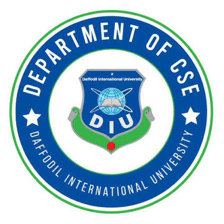

Skip to content
Daffodil International University
University website ↗

Computer Science
& Engineering
TRAINING & PROFESSIONAL DEVELOPMENT
Menu ☰
Home
Programs
Trainers
Facilitators
Collaborators
Work with us ↗
Loading portfolio…